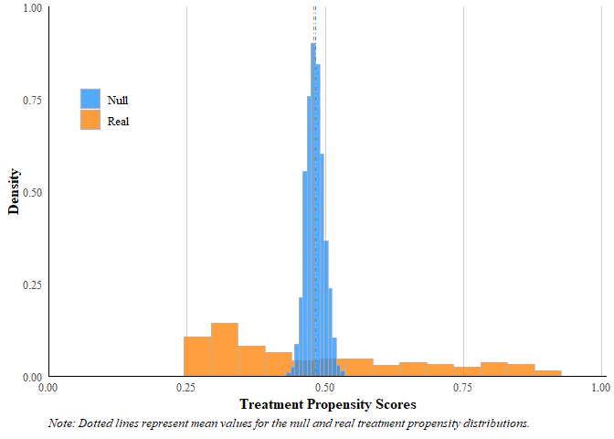

MLbalance is a suite of machine learning balance tests and estimation tools for experimental and observational data, including a fast implementation of the classification permutation test (Johann Gagnon-Bartsch and Yotam Shem-Tov, 2019). The purpose of this suite is to detect unintentional failures of random assignment, data fabrication, or simple covariate imbalance in random or, as-if random, experimental designs. These tools are meant to work “off-the-shelf” but are also customizable for advanced users.
This package is in beta, any recommendations or comments welcome in the issues section.
Installation
You can install the development version of MLbalance from GitHub with:
# install.packages("pak")
pak::pak("CetiAlphaFive/MLbalance")Example
Here is a basic example demonstrating the suite of machine learning balance tests on a simulated binary treatment DGP with multidimensional contamination of the treatment assignment.
library(MLbalance)
set.seed(1995)
#
# Simple simulation
n <- 500
p <- 20
X <- matrix(rnorm(n*p,0,1),n,p)
W <- rbinom(n, 1, ifelse(.021 + abs(.4*X[,4] - .5*X[,8]) < 1, .021 + abs(.4*X[,4] - .5*X[,8]), 1))
Y <- 2*W*X[,4] + 3*X[,2] -2*X[,8] + rnorm(n)
#
b.check <- balance(W = W, #real treatment assignment vector
Y = Y, #outcome variable
X = X, #matrix of pretreatment covariates (or any covariates that SHOULD NOT be related to the assignment process/mechanism)
class.method = "forest" #which classifier?
)
#> | | | 0% | | | 1% | |= | 1% | |= | 2% | |== | 2% | |== | 3% | |== | 4% | |=== | 4% | |=== | 5% | |==== | 5% | |==== | 6% | |===== | 6% | |===== | 7% | |===== | 8% | |====== | 8% | |====== | 9% | |======= | 9% | |======= | 10% | |======= | 11% | |======== | 11% | |======== | 12% | |========= | 12% | |========= | 13% | |========= | 14% | |========== | 14% | |========== | 15% | |=========== | 15% | |=========== | 16% | |============ | 16% | |============ | 17% | |============ | 18% | |============= | 18% | |============= | 19% | |============== | 19% | |============== | 20% | |============== | 21% | |=============== | 21% | |=============== | 22% | |================ | 22% | |================ | 23% | |================ | 24% | |================= | 24% | |================= | 25% | |================== | 25% | |================== | 26% | |=================== | 26% | |=================== | 27% | |=================== | 28% | |==================== | 28% | |==================== | 29% | |===================== | 29% | |===================== | 30% | |===================== | 31% | |====================== | 31% | |====================== | 32% | |======================= | 32% | |======================= | 33% | |======================= | 34% | |======================== | 34% | |======================== | 35% | |========================= | 35% | |========================= | 36% | |========================== | 36% | |========================== | 37% | |========================== | 38% | |=========================== | 38% | |=========================== | 39% | |============================ | 39% | |============================ | 40% | |============================ | 41% | |============================= | 41% | |============================= | 42% | |============================== | 42% | |============================== | 43% | |============================== | 44% | |=============================== | 44% | |=============================== | 45% | |================================ | 45% | |================================ | 46% | |================================= | 46% | |================================= | 47% | |================================= | 48% | |================================== | 48% | |================================== | 49% | |=================================== | 49% | |=================================== | 50% | |=================================== | 51% | |==================================== | 51% | |==================================== | 52% | |===================================== | 52% | |===================================== | 53% | |===================================== | 54% | |====================================== | 54% | |====================================== | 55% | |======================================= | 55% | |======================================= | 56% | |======================================== | 56% | |======================================== | 57% | |======================================== | 58% | |========================================= | 58% | |========================================= | 59% | |========================================== | 59% | |========================================== | 60% | |========================================== | 61% | |=========================================== | 61% | |=========================================== | 62% | |============================================ | 62% | |============================================ | 63% | |============================================ | 64% | |============================================= | 64% | |============================================= | 65% | |============================================== | 65% | |============================================== | 66% | |=============================================== | 66% | |=============================================== | 67% | |=============================================== | 68% | |================================================ | 68% | |================================================ | 69% | |================================================= | 69% | |================================================= | 70% | |================================================= | 71% | |================================================== | 71% | |================================================== | 72% | |=================================================== | 72% | |=================================================== | 73% | |=================================================== | 74% | |==================================================== | 74% | |==================================================== | 75% | |===================================================== | 75% | |===================================================== | 76% | |====================================================== | 76% | |====================================================== | 77% | |====================================================== | 78% | |======================================================= | 78% | |======================================================= | 79% | |======================================================== | 79% | |======================================================== | 80% | |======================================================== | 81% | |========================================================= | 81% | |========================================================= | 82% | |========================================================== | 82% | |========================================================== | 83% | |========================================================== | 84% | |=========================================================== | 84% | |=========================================================== | 85% | |============================================================ | 85% | |============================================================ | 86% | |============================================================= | 86% | |============================================================= | 87% | |============================================================= | 88% | |============================================================== | 88% | |============================================================== | 89% | |=============================================================== | 89% | |=============================================================== | 90% | |=============================================================== | 91% | |================================================================ | 91% | |================================================================ | 92% | |================================================================= | 92% | |================================================================= | 93% | |================================================================= | 94% | |================================================================== | 94% | |================================================================== | 95% | |=================================================================== | 95% | |=================================================================== | 96% | |==================================================================== | 96% | |==================================================================== | 97% | |==================================================================== | 98% | |===================================================================== | 98% | |===================================================================== | 99% | |======================================================================| 99% | |======================================================================| 100%One can quickly evaluate the output of the tests using the built in plot and summary functions.
To plot, simply execute:
b.check |> plot()
To summarize, simply execute:
b.check |> summary()
#>
#> ========================================================================
#> COVARIATE BALANCE ASSESSMENT
#> ========================================================================
#>
#> 1. SAMPLE CHARACTERISTICS
#> ------------------------------------------------------------------------
#> Total observations: 500
#> Treatment group (W=1): 253 (50.6%)
#> Control group (W=0): 247 (49.4%)
#>
#> 2. CLASSIFICATION PERMUTATION TEST
#> ------------------------------------------------------------------------
#> Classifier: forest
#> Number of permutations: 1000
#> Test statistic (observed): 0.5423
#> Null distribution mean: 0.4991
#> Null distribution SD: 0.0051
#> P-value: 0.0010
#> Significance level (alpha): 0.05
#> Result: FAIL
#>
#> 3. PROPENSITY SCORE DIAGNOSTICS (Boosted Regression Forest)
#> ------------------------------------------------------------------------
#> Real treatment assignment:
#> Mean: 0.5042
#> SD: 0.1077
#> Range: [0.3329, 0.7896]
#> Null (permuted) assignment:
#> Mean: 0.5043
#> SD: 0.0233
#> Range: [0.4458, 0.5822]
#> Distributional comparison:
#> Difference in means: -0.0001
#> Ratio of SDs: 4.6193
#>
#> 4. TREATMENT EFFECT ESTIMATES
#> ------------------------------------------------------------------------
#> Difference-in-Means (unadjusted):
#> Estimate: -0.2429
#> Standard error: 0.3698
#> 95% CI (normal approx.): [-0.9676, 0.4818]
#>
#> Outcome-adjusted (causal forest, no propensity weighting):
#> Estimate: 0.0009
#> Standard error: 0.1762
#> 95% CI (inf. jackknife): [-0.3445, 0.3463]
#>
#> Doubly robust (causal forest with propensity weighting):
#> Estimate: 0.0283
#> Standard error: 0.1689
#> 95% CI (inf. jackknife): [-0.3028, 0.3593]
#> Number of trees: 2000
#>
#> 5. INTERPRETATION
#> ------------------------------------------------------------------------
#> The classification permutation test rejects the null hypothesis,
#> indicating that treatment and control groups differ in their
#> covariate distributions. The classifier can distinguish between
#> groups better than random chance.
#>
#> ESTIMATOR GUIDE:
#> - DiM: Simple difference in means, no covariate adjustment.
#> - Outcome-adjusted: Uses causal forest for outcome regression only.
#> - Doubly robust: Combines outcome regression with propensity weighting.
#> If balance passes, all three should be similar. Large differences
#> may indicate model misspecification or residual confounding.